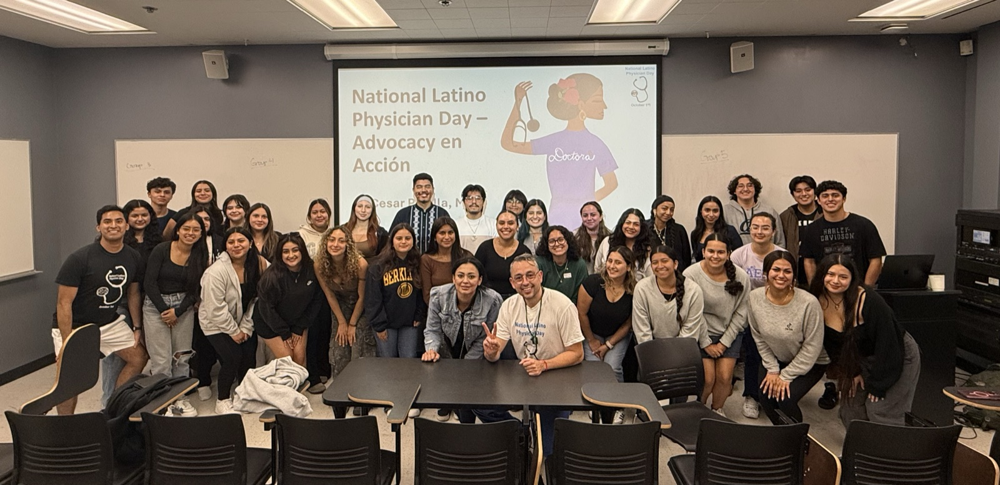

Find your people.
Whether you’re set on a career in health or still figuring it out, there’s a place for you at CHE. Start with a general meeting.
Who can join
Come as you are.
You don’t need to be Latinx, pre-med, or certain of your path. Our general meetings welcome students exploring health and community.
What to expect
Start with an hour.
General meetings run Wednesdays, 6–7 p.m. during the semester. They’re free to attend, and you can join during the semester.
Your first step
Meet us, then settle in.
No application is needed to attend a general meeting. Check Events for details, or email our secretary for help finding your first meeting and getting connected.
